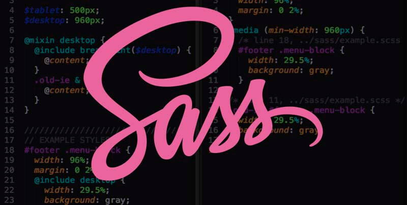

Introduction about languges you it in front end web development
| Hyper Text Markup Language(HTML),Cascading Style Sheets(CSS), are the languages that run the web.They're very closely related,but they're also designed for very specific tasks.Understanding how they interact will go a long way towards becoming a web developer.HTML is for adding meaning to raw content by marking it up. | |
JavaScript is the world's most popular programming language.JavaScript is the programming language of the web. JavaScript is easy to learn.This tutorial Will teach You JavaScript From basci to advanced. | |
| Hyper Text Markup Language(HTML),Cascading Style Sheets(CSS), are the languages that run the web.They're very closely related,but they're also designed for very specific tasks.Understanding how they interact will go a long way towards becoming a web developer.HTML is for adding meaning to raw content by marking it up. | |
Hyper Text Markup Language(HTML),Cascading Style Sheets(CSS), are the languages that run the web.They're very closely related,but they're also designed for very specific tasks.Understanding how they interact will go a long way towards becoming a web developer.HTML is for adding meaning to raw content by marking it up. | |
| Hyper Text Markup Language(HTML),Cascading Style Sheets(CSS), are the languages that run the web.They're very closely related,but they're also designed for very specific tasks.Understanding how they interact will go a long way towards becoming a web developer.HTML is for adding meaning to raw content by marking it up. | |
Hyper Text Markup Language(HTML),Cascading Style Sheets(CSS), are the languages that run the web.They're very closely related,but they're also designed for very specific tasks.Understanding how they interact will go a long way towards becoming a web developer.HTML is for adding meaning to raw content by marking it up. |  |